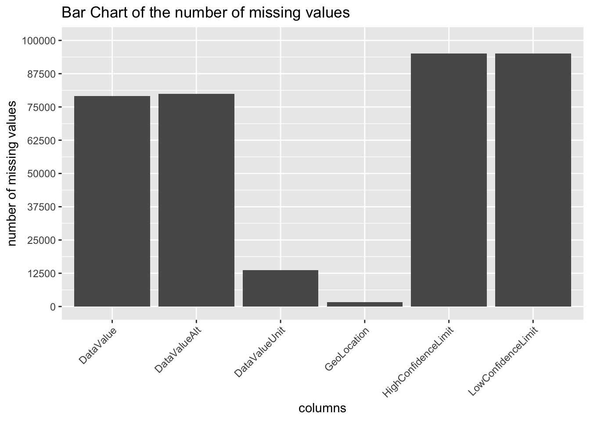
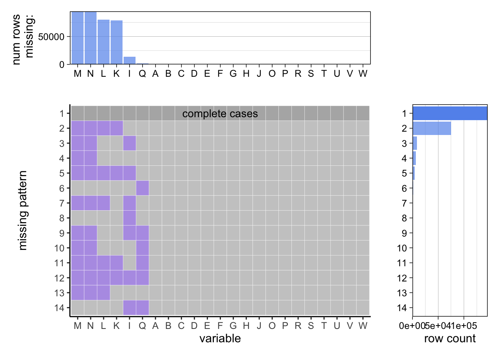
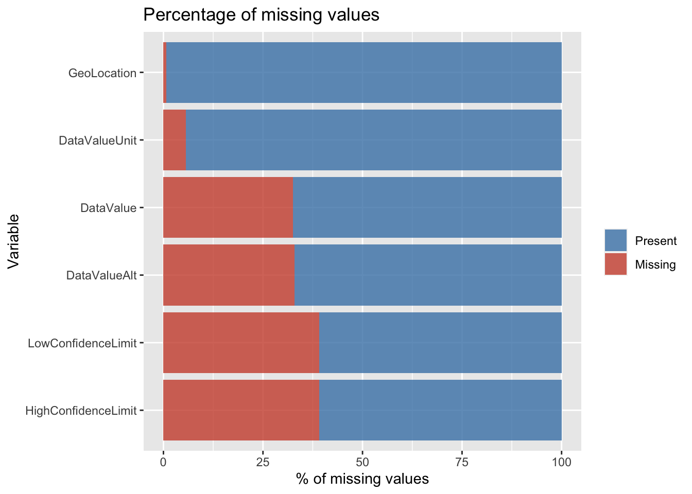
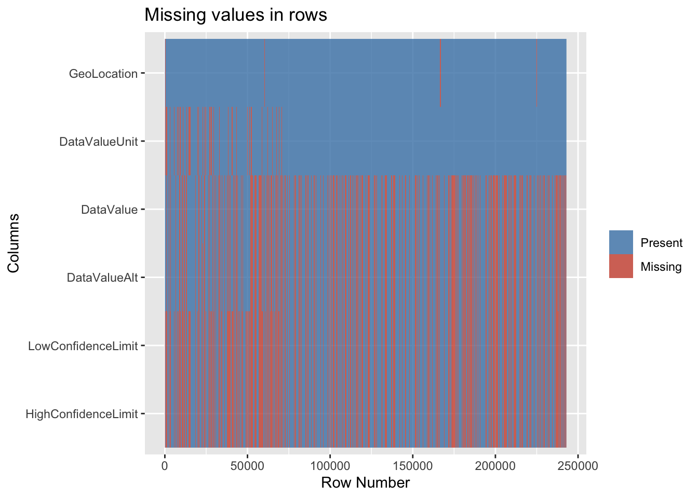
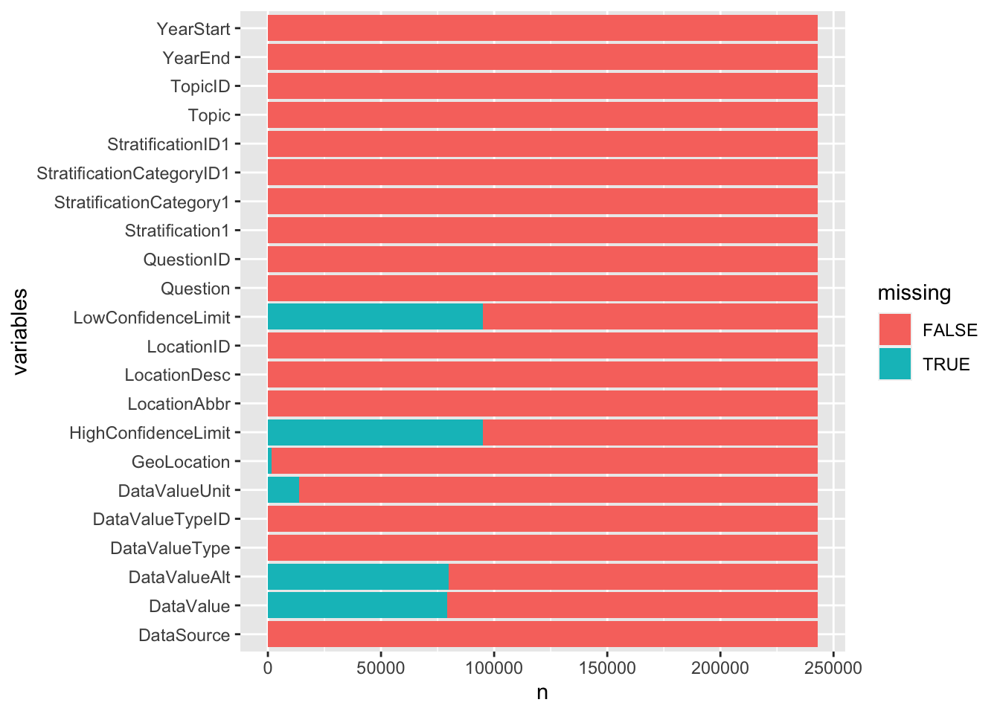

Chapter 3 Data
3.1 Sources
The dataset used in this project is borrowed from the division of population health in Center for Disease Control and Prevention (CDC) - (https://catalog.data.gov/dataset/u-s-chronic-disease-indicators-cdi). The dataset was created on 10th November 2020 and was last modified on 21st April 2022.
It contains 1082328 entries, where there are 34 attributes contributing to the observance of the chronic disease in the United States of America.
## [1] 1082328 34Let’s have a look at the structure of the dataset in order to comprehend the varied traits that help define the data.
## 'data.frame': 1082328 obs. of 34 variables:
## $ YearStart : int 2010 2017 2018 2011 2012 2015 2018 2010 2014 2016 ...
## $ YearEnd : int 2010 2017 2018 2011 2012 2015 2018 2010 2014 2016 ...
## $ LocationAbbr : chr "AK" "AK" "AK" "AK" ...
## $ LocationDesc : chr "Alaska" "Alaska" "Alaska" "Alaska" ...
## $ DataSource : chr "NVSS" "NVSS" "NVSS" "NVSS" ...
## $ Topic : chr "Alcohol" "Alcohol" "Alcohol" "Chronic Kidney Disease" ...
## $ Question : chr "Chronic liver disease mortality" "Chronic liver disease mortality" "Chronic liver disease mortality" "Mortality with end-stage renal disease" ...
## $ Response : logi NA NA NA NA NA NA ...
## $ DataValueUnit : chr "" "" "" "" ...
## $ DataValueType : chr "Number" "Number" "Number" "Number" ...
## $ DataValue : chr "70" "121" "121" "221" ...
## $ DataValueAlt : num 70 121 121 221 234 ...
## $ DataValueFootnoteSymbol : chr "" "" "" "" ...
## $ DatavalueFootnote : chr "" "" "" "" ...
## $ LowConfidenceLimit : num NA NA NA NA NA ...
## $ HighConfidenceLimit : num NA NA NA NA NA ...
## $ StratificationCategory1 : chr "Overall" "Overall" "Overall" "Race/Ethnicity" ...
## $ Stratification1 : chr "Overall" "Overall" "Overall" "White, non-Hispanic" ...
## $ StratificationCategory2 : logi NA NA NA NA NA NA ...
## $ Stratification2 : logi NA NA NA NA NA NA ...
## $ StratificationCategory3 : logi NA NA NA NA NA NA ...
## $ Stratification3 : logi NA NA NA NA NA NA ...
## $ GeoLocation : chr "POINT (-147.72205903599973 64.84507995700051)" "POINT (-147.72205903599973 64.84507995700051)" "POINT (-147.72205903599973 64.84507995700051)" "POINT (-147.72205903599973 64.84507995700051)" ...
## $ ResponseID : logi NA NA NA NA NA NA ...
## $ LocationID : int 2 2 2 2 2 2 2 2 2 2 ...
## $ TopicID : chr "ALC" "ALC" "ALC" "CKD" ...
## $ QuestionID : chr "ALC6_0" "ALC6_0" "ALC6_0" "CKD1_0" ...
## $ DataValueTypeID : chr "NMBR" "NMBR" "NMBR" "NMBR" ...
## $ StratificationCategoryID1: chr "OVERALL" "OVERALL" "OVERALL" "RACE" ...
## $ StratificationID1 : chr "OVR" "OVR" "OVR" "WHT" ...
## $ StratificationCategoryID2: logi NA NA NA NA NA NA ...
## $ StratificationID2 : logi NA NA NA NA NA NA ...
## $ StratificationCategoryID3: logi NA NA NA NA NA NA ...
## $ StratificationID3 : logi NA NA NA NA NA NA ...The attributes that we focus on for this project are:
We observe that there are several redundant columns and multiple columns with null values. Since we can’t work directly with this dataset, we analyze the missing values and then transform the data into it’s usable form.
3.2 Missing value analysis
Now to begin with missing value analysis we first check the percentage of missing values in the initial dataset. Please note here that we are referring to the initial dataset as the original dataset with only the years 2018, 2019, 2020, 2021. Sine there were many null string values in the dataset we converted them to NA before calculating the percentage of missing values in each column.
## YearStart YearEnd LocationAbbr
## 0.0000000 0.0000000 0.0000000
## LocationDesc DataSource Topic
## 0.0000000 0.0000000 0.0000000
## Question Response DataValueUnit
## 0.0000000 100.0000000 5.6512846
## DataValueType DataValue DataValueAlt
## 0.0000000 32.5825449 32.8883200
## DataValueFootnoteSymbol DatavalueFootnote LowConfidenceLimit
## 66.4704987 66.4704987 39.1536242
## HighConfidenceLimit StratificationCategory1 Stratification1
## 39.1536242 0.0000000 0.0000000
## StratificationCategory2 Stratification2 StratificationCategory3
## 100.0000000 100.0000000 100.0000000
## Stratification3 GeoLocation ResponseID
## 100.0000000 0.6938586 100.0000000
## LocationID TopicID QuestionID
## 0.0000000 0.0000000 0.0000000
## DataValueTypeID StratificationCategoryID1 StratificationID1
## 0.0000000 0.0000000 0.0000000
## StratificationCategoryID2 StratificationID2 StratificationCategoryID3
## 100.0000000 100.0000000 100.0000000
## StratificationID3
## 100.0000000
From the above, we can observe that we have missing values in the following columns: Response, DataValueUnit, DataValue, DataValueAlt, DataValueFootnoteSymbol, DatavalueFootnote, LowConfidenceLimit, HighConfidenceLimit, StratificationCategory2, Stratification2, StratificationCategory3, Stratification3, GeoLocation, ResponseID, StratificationCategoryID2, StratificationID2, StratificationCategoryID3, StratificationID3.
For the purpose of the further analysis we straightaway dropped columns like - Response, StratificationCategory2, Stratification2, StratificationCategory3, Stratification3, ResponseID, StratificationCategoryID2, StratificationID2, StratificationCategoryID3, StratificationID3. We did so as they had 100% of the values missing so keeping them would only add more noise to our plots as they serve no useful meaning. In addition to the above, we also dropped the colummns: DataValueFootnoteSymbol, DatavalueFootnote as these columns have significant (~66%) number of missing values and served no useful purpose for our analysis.
Now we recalculate the number of missing values in each column to get an idea of what we have after the above transformations.
## X YearStart YearEnd
## 0 0 0
## LocationAbbr LocationDesc DataSource
## 0 0 0
## Topic Question DataValueUnit
## 0 0 139390
## DataValueType DataValue DataValueAlt
## 0 353093 355136
## LowConfidenceLimit HighConfidenceLimit StratificationCategory1
## 465077 465077 0
## Stratification1 GeoLocation LocationID
## 0 9196 0
## TopicID QuestionID DataValueTypeID
## 0 0 0
## StratificationCategoryID1 StratificationID1
## 0 0To get a better idea about the distribution of the missing values, we plot several types of graphs. This also help us understand patterns between different missing values, if any. We begin with plotting a vertical bar chart

From the above Bar Chart we can infer that DataValue and DataValueAlt have same number of missing values. Similarly, the columns HighConfidenceLimit and LowConfidenceLimit have equal number of missing values. Perhaps, there is a correlation between them? Before we arrive to this conclusion, let us take look through some more visualizations.
## X YearStart YearEnd
## 0 0 0
## LocationAbbr LocationDesc DataSource
## 0 0 0
## Topic Question DataValueUnit
## 0 0 139390
## DataValueType DataValue DataValueAlt
## 0 353093 355136
## LowConfidenceLimit HighConfidenceLimit StratificationCategory1
## 465077 465077 0
## Stratification1 GeoLocation LocationID
## 0 9196 0
## TopicID QuestionID DataValueTypeID
## 0 0 0
## StratificationCategoryID1 StratificationID1
## 0 0
B - Year start C - Year end D - Location Abbreviation E - location description F - Data Source G - Topic H - Question I - DataValueUnit J - DataValueType K - DataValue L - DataValueAlt M - LowConfidenceLimit N - HighConfidenceLimit O - StratificationCategory1 P - Stratification1 Q - Geolocation R - LocationID S - TopicID T - QuestionID U - DataValueTypeID V - StratificationCategoryID1 W - StratificationID1
The above graph gives a more different view to visualize the distribution of missing values. The Variable on the X-axis are the columns. We have one plot where we get an idea of the number of rows missing in each column. Then we have another plot which is giving us a pattern of the missing values in each column. The third plot gives us a more clear picture regarding the association of missing values with the row count.
We calculated the percentage of missing values in the beginning but we did not do so after dropping the columns so to get a better idea of the percentage of missing values, we plot a horizontal bar chart.

As expected, the above horizontal bar chart is consistent with the first bar chart that we made. The only difference here is that we have taken the percentage instead of the number of missing values. In addition to that, the above plot is much more visually appealing and is arranged in ascending order to enable visual comparative analysis easily.
So far, we had primarily been focussing on the columns. Therefore we now dive into the row level aspects. So now let is visualize the missing values in another way by plotting each row in the dataset to get further insights.

The above visualization affirms that the LowConfidenceLimit and HighConfidenceLimit are indeed correlated. In fact they are most likely the same because the rows that have missing LowConfidenceLimit also have missing HighConfidenceLimit and vice versa. A similar conclusion can be made for DataValue and DataValueAlt. GeoLocation has been consistent in the sense that it has very few missing values.
Since the above plots did not really take other columns (columns without missing values) into consideration, it can be difficult to gauge the relativity between columns that do not have missing values and the columns that have missing values. Therefore, the below plot shows all the columns. The bars filled with blue indicates the one’s having missing values therefore they are indicated as True. False indicates that the region does not have missing values. Variables represent the columns
## # A tibble: 5,345,758 × 2
## variables missing
## <chr> <lgl>
## 1 YearStart FALSE
## 2 YearEnd FALSE
## 3 LocationAbbr FALSE
## 4 LocationDesc FALSE
## 5 DataSource FALSE
## 6 Topic FALSE
## 7 Question FALSE
## 8 DataValueUnit TRUE
## 9 DataValueType FALSE
## 10 DataValue FALSE
## # … with 5,345,748 more rows## # A tibble: 28 × 3
## variables missing n
## <chr> <lgl> <int>
## 1 DataSource FALSE 242989
## 2 DataValue FALSE 163817
## 3 DataValue TRUE 79172
## 4 DataValueAlt FALSE 163074
## 5 DataValueAlt TRUE 79915
## 6 DataValueType FALSE 242989
## 7 DataValueTypeID FALSE 242989
## 8 DataValueUnit FALSE 229257
## 9 DataValueUnit TRUE 13732
## 10 GeoLocation FALSE 241303
## # … with 18 more rows
3.3 Cleaning / transformation
Based on the analysis from the plots above, we will be dropping 16 features (mentioned above) that have missing values since it makes more sense than imputing those columns.
## 'data.frame': 1082328 obs. of 18 variables:
## $ YearStart : int 2010 2017 2018 2011 2012 2015 2018 2010 2014 2016 ...
## $ YearEnd : int 2010 2017 2018 2011 2012 2015 2018 2010 2014 2016 ...
## $ LocationAbbr : chr "AK" "AK" "AK" "AK" ...
## $ LocationDesc : chr "Alaska" "Alaska" "Alaska" "Alaska" ...
## $ DataSource : chr "NVSS" "NVSS" "NVSS" "NVSS" ...
## $ Topic : chr "Alcohol" "Alcohol" "Alcohol" "Chronic Kidney Disease" ...
## $ Question : chr "Chronic liver disease mortality" "Chronic liver disease mortality" "Chronic liver disease mortality" "Mortality with end-stage renal disease" ...
## $ DataValueType : chr "Number" "Number" "Number" "Number" ...
## $ DataValue : chr "70" "121" "121" "221" ...
## $ StratificationCategory1 : chr "Overall" "Overall" "Overall" "Race/Ethnicity" ...
## $ Stratification1 : chr "Overall" "Overall" "Overall" "White, non-Hispanic" ...
## $ GeoLocation : chr "POINT (-147.72205903599973 64.84507995700051)" "POINT (-147.72205903599973 64.84507995700051)" "POINT (-147.72205903599973 64.84507995700051)" "POINT (-147.72205903599973 64.84507995700051)" ...
## $ LocationID : int 2 2 2 2 2 2 2 2 2 2 ...
## $ TopicID : chr "ALC" "ALC" "ALC" "CKD" ...
## $ QuestionID : chr "ALC6_0" "ALC6_0" "ALC6_0" "CKD1_0" ...
## $ DataValueTypeID : chr "NMBR" "NMBR" "NMBR" "NMBR" ...
## $ StratificationCategoryID1: chr "OVERALL" "OVERALL" "OVERALL" "RACE" ...
## $ StratificationID1 : chr "OVR" "OVR" "OVR" "WHT" ...To be more specific on a period of data, we will be trimming the dataset down to the “Pre-During COVID” period i,e 2018 - 2020 to estimate the effect of chronic diseases on the individuals.
Since there are many categories in the Data Value type, we will extract entries related to “Number” that give us the population count.
```
## 'data.frame': 18928 obs. of 18 variables:
## $ YearStart : int 2018 2018 2018 2018 2018 2018 2018 2018 2018 2018 ...
## $ YearEnd : int 2018 2018 2018 2018 2018 2018 2018 2018 2018 2018 ...
## $ LocationAbbr : chr "AK" "AL" "AR" "AZ" ...
## $ LocationDesc : chr "Alaska" "Alabama" "Arkansas" "Arizona" ...
## $ DataSource : chr "NVSS" "NVSS" "NVSS" "NVSS" ...
## $ Topic : chr "Alcohol" "Cardiovascular Disease" "Cardiovascular Disease" "Cardiovascular Disease" ...
## $ Question : chr "Chronic liver disease mortality" "Mortality from coronary heart disease" "Mortality from coronary heart disease" "Mortality from total cardiovascular diseases" ...
## $ DataValueType : chr "Number" "Number" "Number" "Number" ...
## $ DataValue : num 121 3056 2022 260 1576 ...
## $ StratificationCategory1 : chr "Overall" "Gender" "Gender" "Race/Ethnicity" ...
## $ Stratification1 : chr "Overall" "Male" "Female" "Asian or Pacific Islander" ...
## $ GeoLocation : chr "POINT (-147.72205903599973 64.84507995700051)" "POINT (-86.63186076199969 32.84057112200048)" "POINT (-92.27449074299966 34.74865012400045)" "POINT (-111.76381127699972 34.865970280000454)" ...
## $ LocationID : int 2 1 5 4 4 6 9 9 11 11 ...
## $ TopicID : chr "ALC" "CVD" "CVD" "CVD" ...
## $ QuestionID : chr "ALC6_0" "CVD1_3" "CVD1_3" "CVD1_1" ...
## $ DataValueTypeID : chr "NMBR" "NMBR" "NMBR" "NMBR" ...
## $ StratificationCategoryID1: chr "OVERALL" "GENDER" "GENDER" "RACE" ...
## $ StratificationID1 : chr "OVR" "GENM" "GENF" "API" ...
```There are 8 data sources contributing to the collection of chronic data after pre-processing the data,(intially there were 26 contributors).
```
## [1] 8
```From the plot, it is clear that “NVSS” has most contributions, we will be using the data only from that source for our analysis.
```
## [1] 10540 18
```
```
## 'data.frame': 10540 obs. of 18 variables:
## $ YearStart : int 2018 2018 2018 2018 2018 2018 2018 2018 2018 2018 ...
## $ YearEnd : int 2018 2018 2018 2018 2018 2018 2018 2018 2018 2018 ...
## $ LocationAbbr : chr "AK" "AL" "AR" "AZ" ...
## $ LocationDesc : chr "Alaska" "Alabama" "Arkansas" "Arizona" ...
## $ DataSource : chr "NVSS" "NVSS" "NVSS" "NVSS" ...
## $ Topic : chr "Alcohol" "Cardiovascular Disease" "Cardiovascular Disease" "Cardiovascular Disease" ...
## $ Question : chr "Chronic liver disease mortality" "Mortality from coronary heart disease" "Mortality from coronary heart disease" "Mortality from total cardiovascular diseases" ...
## $ DataValueType : chr "Number" "Number" "Number" "Number" ...
## $ DataValue : num 121 3056 2022 260 1576 ...
## $ StratificationCategory1 : chr "Overall" "Gender" "Gender" "Race/Ethnicity" ...
## $ Stratification1 : chr "Overall" "Male" "Female" "Asian or Pacific Islander" ...
## $ GeoLocation : chr "POINT (-147.72205903599973 64.84507995700051)" "POINT (-86.63186076199969 32.84057112200048)" "POINT (-92.27449074299966 34.74865012400045)" "POINT (-111.76381127699972 34.865970280000454)" ...
## $ LocationID : int 2 1 5 4 4 6 9 9 11 11 ...
## $ TopicID : chr "ALC" "CVD" "CVD" "CVD" ...
## $ QuestionID : chr "ALC6_0" "CVD1_3" "CVD1_3" "CVD1_1" ...
## $ DataValueTypeID : chr "NMBR" "NMBR" "NMBR" "NMBR" ...
## $ StratificationCategoryID1: chr "OVERALL" "GENDER" "GENDER" "RACE" ...
## $ StratificationID1 : chr "OVR" "GENM" "GENF" "API" ...
```The updated data after cleaning and considering the optimal attributes has 10540 entries and 18 attributes that constitutes our primary 8 features along with 10 supporting features for analysis.